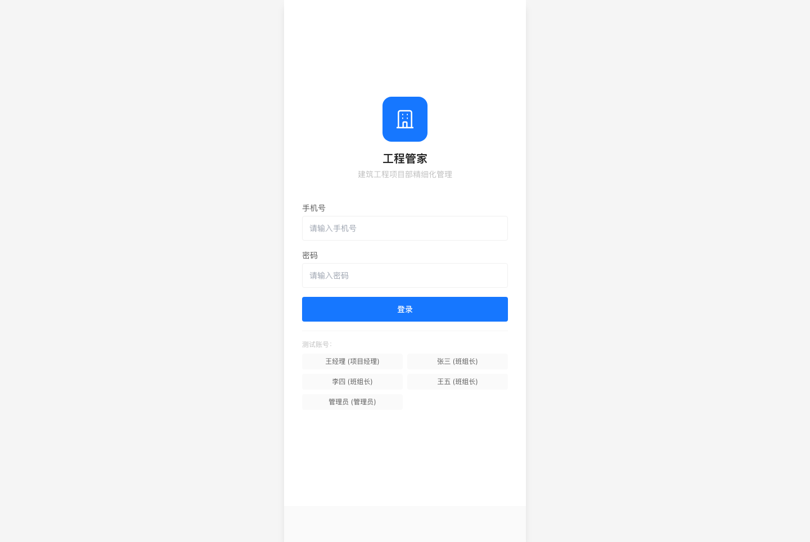
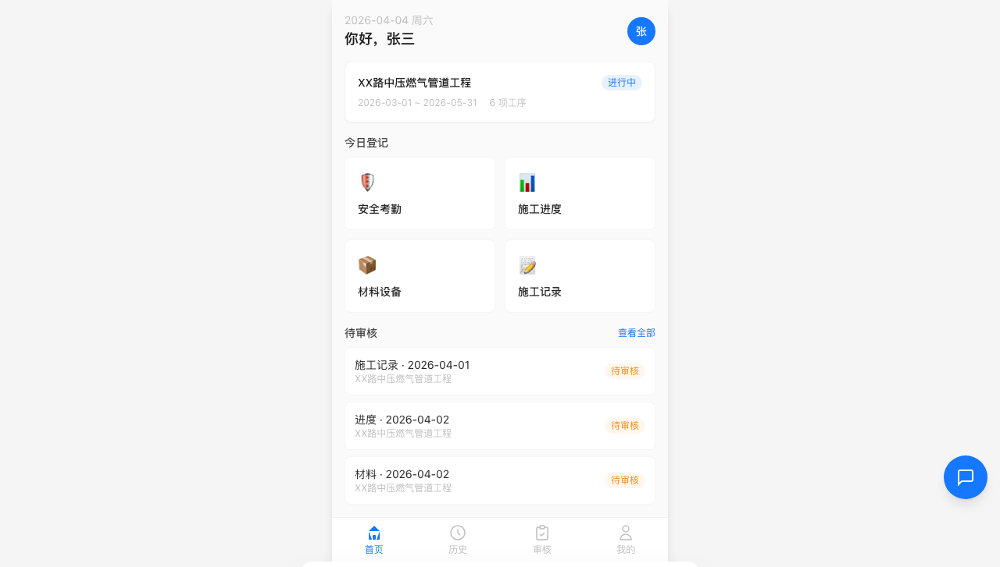
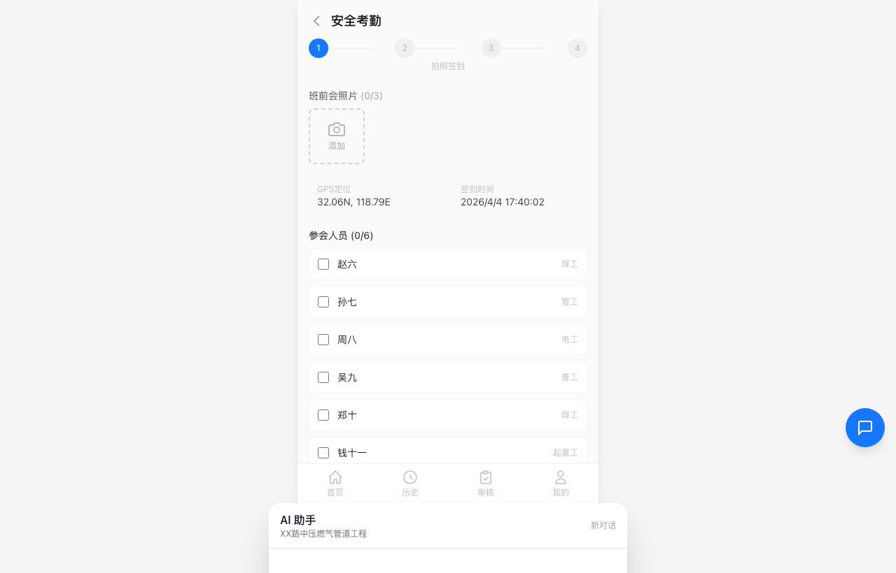
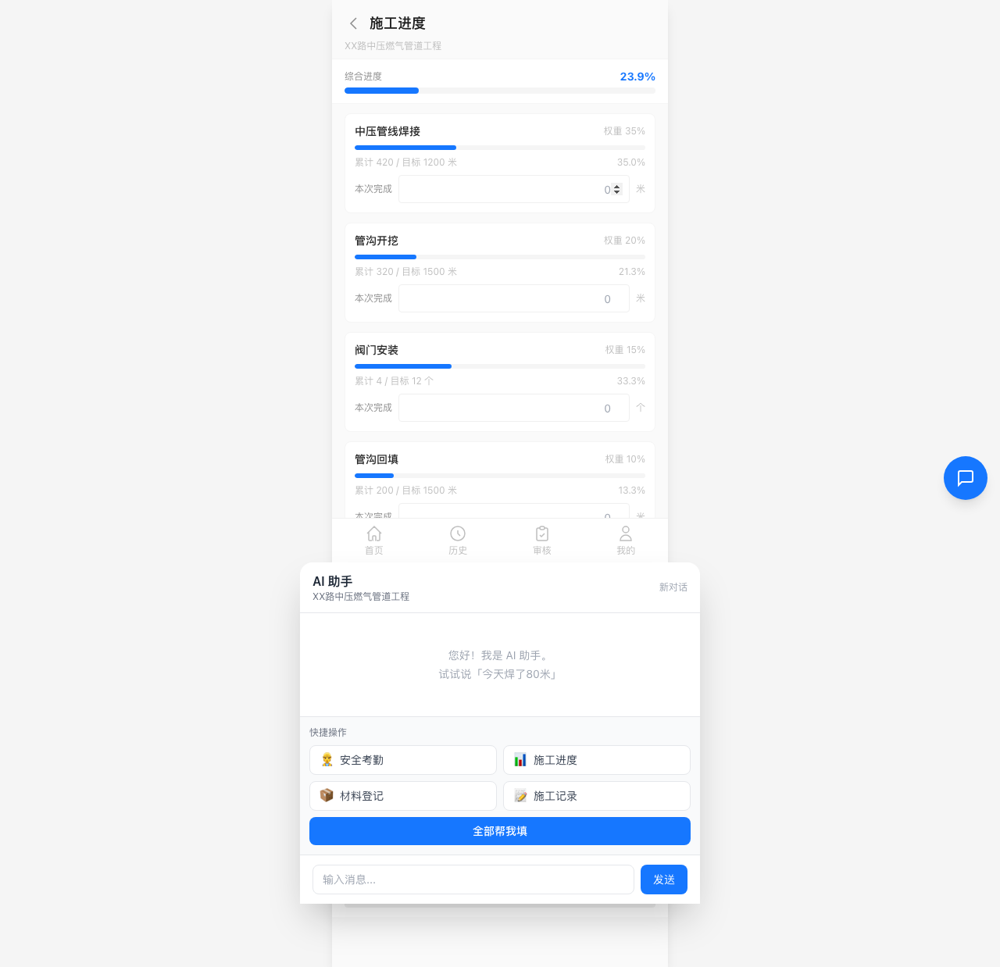
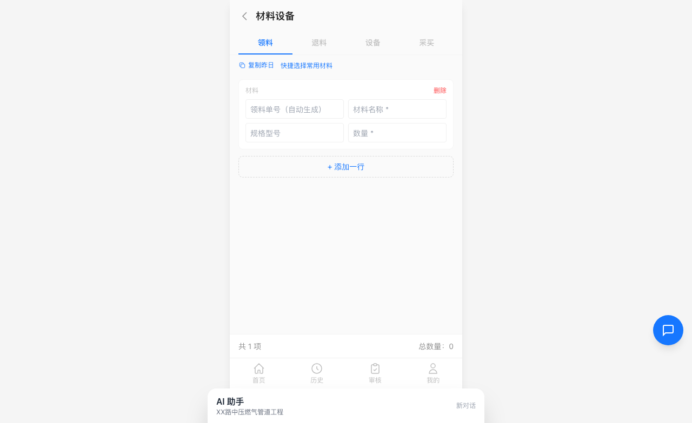
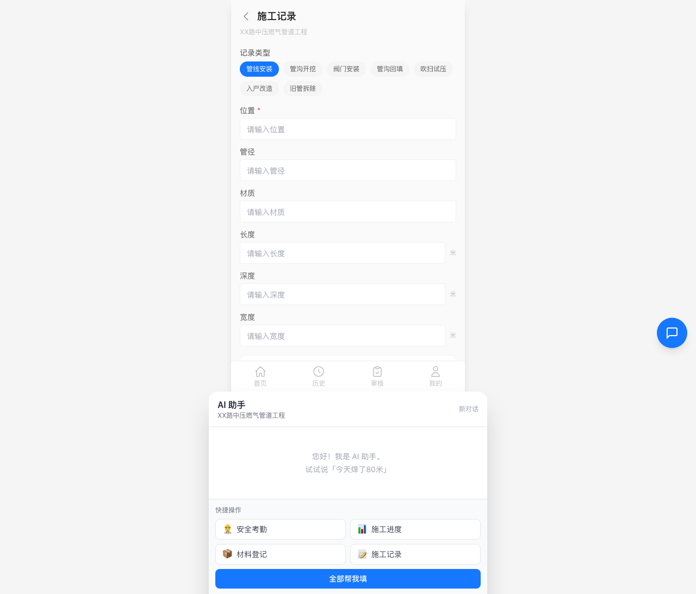
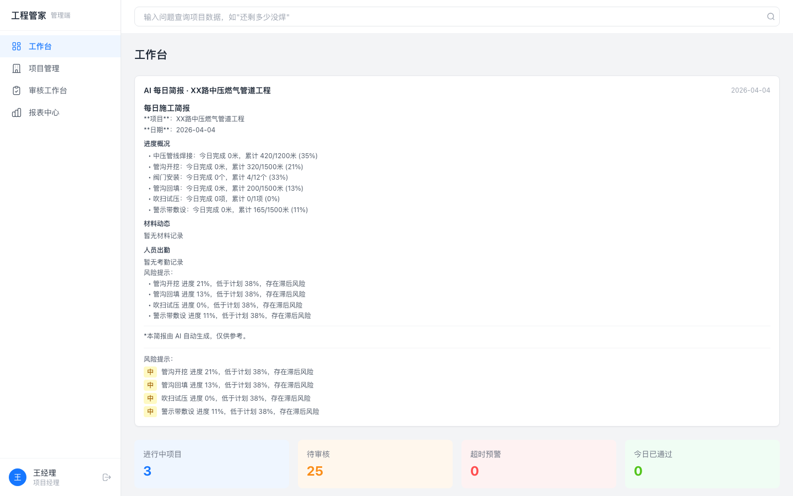
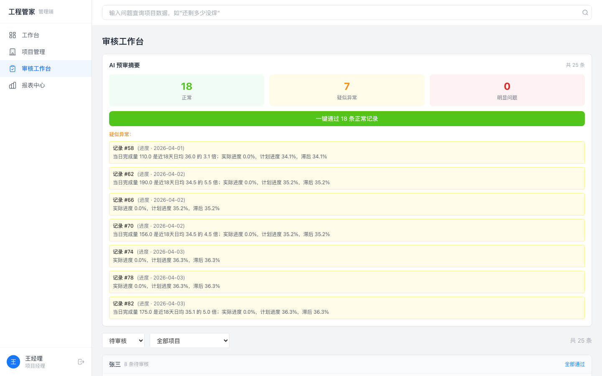
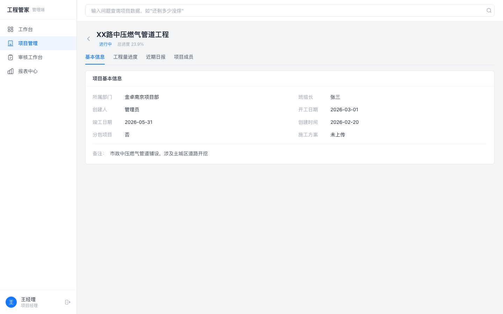
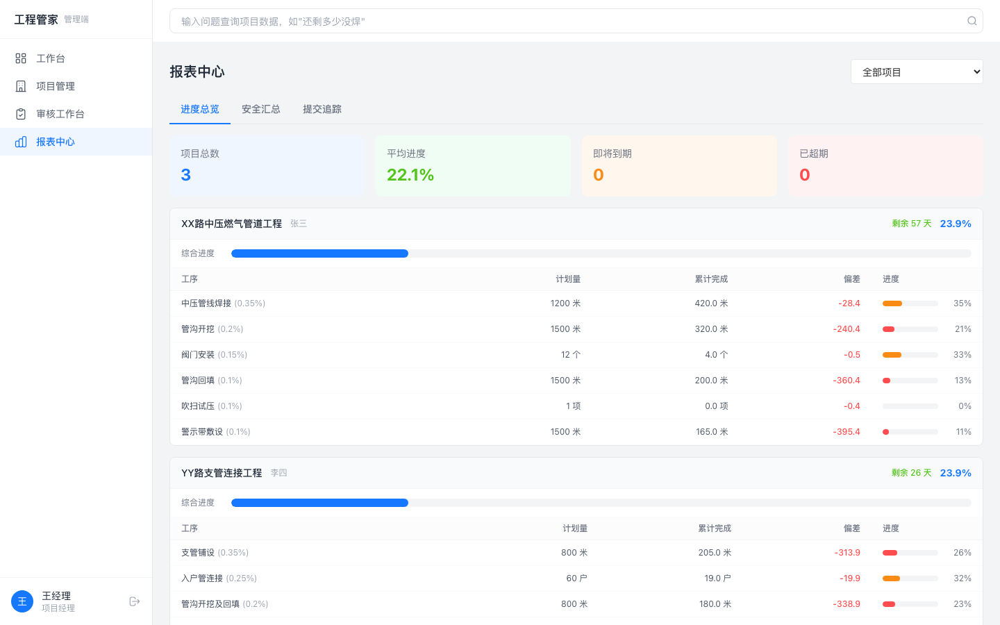

角色说明
- 张三（班组长）：移动端操作 — 每日填报考勤、进度、材料、施工记录
- 王经理（项目经理）：PC 端管理 — 审核日报、查看项目进度、数据报表
- AI 助手：浮窗对话式填表，支持自然语言输入
流程一：用户登录
支持手机号密码登录和快捷登录（测试用）

1
登录页
手机号 + 密码登录，支持快捷选择角色
流程二：移动端首页（班组长视角）
今日登记入口、项目信息、待审核列表、AI 助手浮窗

2
移动端首页
四大模块入口 + 待审核 + AI 浮窗
流程三：四大模块填报
班组长每日登记：安全考勤 → 施工进度 → 材料设备 → 施工记录

3
安全考勤
4步向导：拍照签到 → 安全交底 → 电子签名 → 提交
→

4
施工进度
按工序填写完成量，自动累计进度百分比

5
材料设备
领料/退料/设备/采买四类，快捷选择常用材料
→

6
施工记录
7类记录类型，隐蔽工程标记，照片上传
流程四：移动端审核 & 历史
项目经理在移动端审核日报、班组长查看历史记录
流程五：PC 端管理后台（项目经理视角）
Dashboard 仪表盘 → 项目管理 → 审核工作台 → 报表中心 → 项目详情

9
PC 端 Dashboard
项目总览、进度统计、安全交底摘要、待审核列表

10
PC 端审核工作台
按班组长分组审核，支持批量通过、退回
→

12
项目详情
信息/进度/记录/成员四个 Tab

13
报表中心
进度概览（偏差分析）、安全月度趋势、竣工倒计时